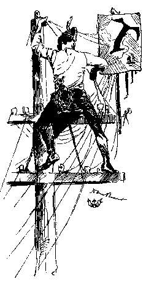

|  |
Mark
Twain In His Times
Innocents Abroad: Notices
Innocents Abroad: Hypertext Map
Representing Jim, 1885-1985
Photographing "Mark Twain"
Illustrating "Mark Twain"
Collecting "Mark Twain"
Yours Truly
Mark Twain's Voice
"A True Story, Word for Word As I Heard It"
Representing Jim, 1885-1985
|